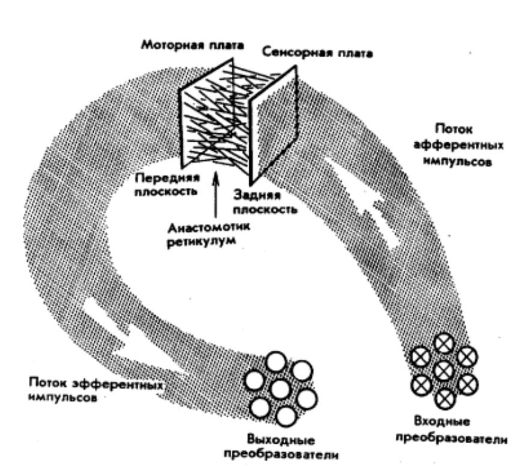
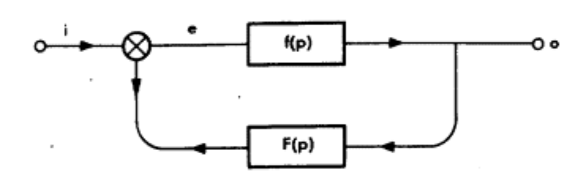
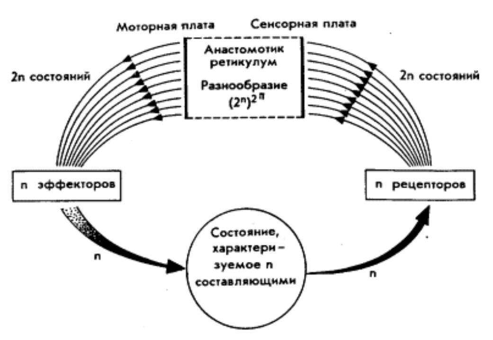
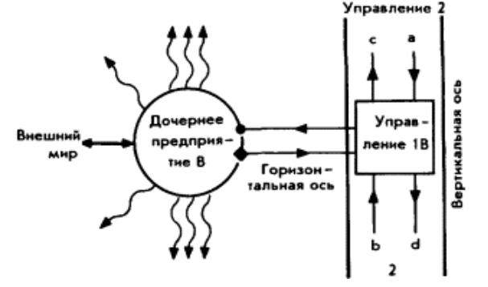
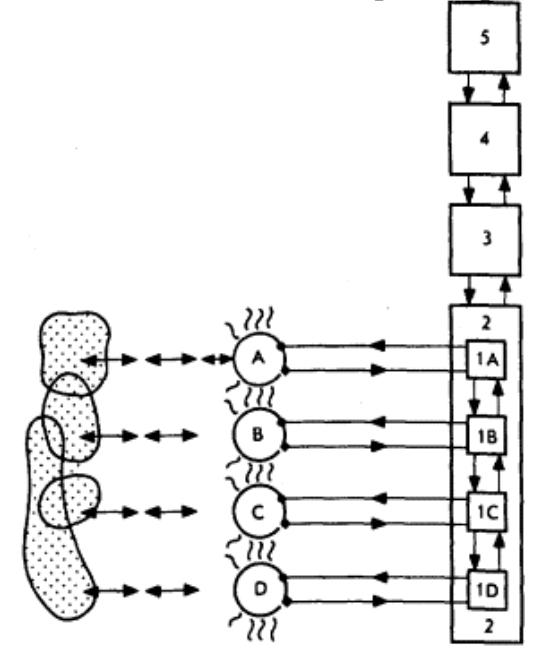
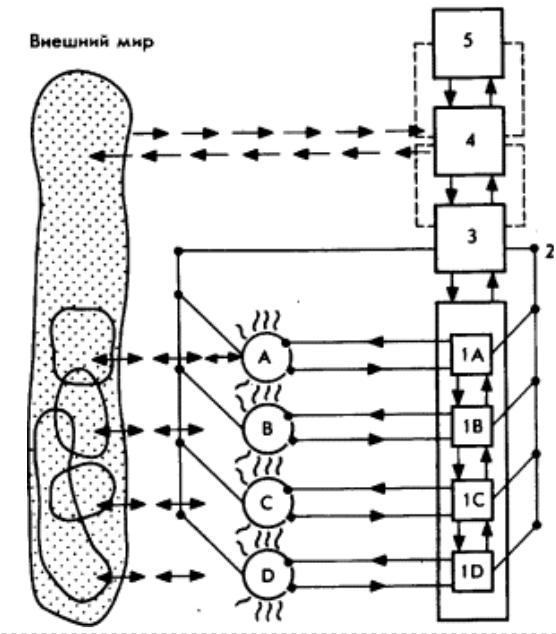
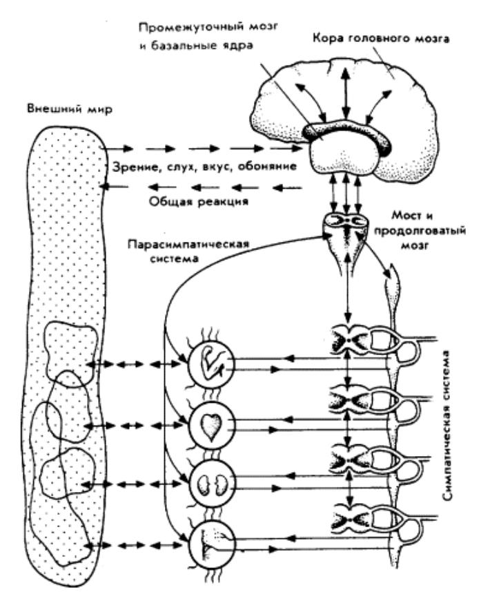

Конспект книги «Мозг фирмы» Стаффорда Бира
14.01.2025
Следующий текст, по возможности, сконцентрирован на двух вещах: общие понятия кибернетики и способ (метод) которым была получена модель жизнеспособной системы. Сама модель жизнеспособной системе представляет из себя кибернетическую модель управления организацией. Модель разделена на 5 уровней каждый из которых имеет определенную роль в обработке информации и принятии решений и связан с другими уровнями каналами передачи информации.
Книга разделена на четыре части, четвертая часть входит только во второе издание и содержит описание попытки изменения экономики Чили на основе идей кибернетики в начале 1970-х. ходов. Эта часть представляет отдельный интерес и не затрагивается в этом конспекте.
Первые три главы построены так, что описывают один и тот же предмет на разном уровне детализации: в первой самые общие моменты кибернетики, во второй на основе них возникает общее представление о модели жизнеспособной системы, в третьей модель жизнеспособной системы раскрывается в деталях. «Книга в первом издании начинается фактически три раза и соответственно разделена на три части».
Кибернетика
Любая система состоит из трех элементов:
- Входных рецепторов через которые поступает информация;
- Выходных органов, через которые система может что-то делать;
- Преобразователь входных сигналов в выходные (специальный термин для этого преобразователя — анастомотик ретикулум).

Системой может быть любой объект: пишущая машинка, биологический организм, государственная экономика. В целом «то, что считается системой, определяется исследователем, и определяет её границы исходя из своих целей».
Система остаётся стабильной благодаря обратной связи. Обратная связь — функция которая принимает данные из выходного потока (действия органов системы), преобразует эти данные и добавляет их к входному потоку (на рецепторы).

Обратная связь для каждой системы будет разной. Например, человек вышел на улицу (действие), почувствовал что слишком холодно (рецепторы приняли информацию), решил вернуться (функция F() преобразовала информацию из рецепторов и повлияла на следующее действие), затем вернулся и переоделся (действие). Если после того как человек вышел снова стало слишком жарко, то человек, например, снимает шапку (другой уровень сигнала в рецепторах привел к другому действию другой интенсивности).
Способ преобразования информации из входных рецепторов в действия может быть смоделирован математическими уравнениями. Ключевая проблема — количество комбинаций между информацией из рецепторов и действиями органов очень большое. Такое большое, что даже техника не позволяет его вычислить. Вывод из этого — нельзя понять как работает анастомотик ретикулум.

Но несмотря на то, что вычислить (понять) зависимость между входом и выходом нельзя, сложные системы работают. Работают они благодаря алгедонической цепи. Алгедоническая цепь — вид обратной связи, которая появляется если есть внешняя и внутренняя система, внешняя система не знает устройство внутренней, но может наблюдать её действия и оценивать их в виде сигналов «хорошо» и «плохо». Алгедоническая цепь похожа на дрессировку животных: желательные действия внутренней системы закрепляются, а нежелательные заглушаются. Таким образом внутренняя система, как бы сама, перестраивает свой анастомотик ретикулум, чтобы соответствовать требованиями внешней системы.
Дрессировщик и его собака в том же положении, что и оператор, говорящий с прибором на языке Мета-1. Дрессировщик собаки не понимает, "как работает собака", а собака не понимает человеческой речи. Дрессировщик, следовательно, как-то стимулирует собаку и наблюдает за ее реакцией. Реакцию собаки можно менять наказанием или наградой. Это влечет за собой изменения порядка соединения в анастомотик ретикулум. Конечно, здесь речь не идет о внесении переключателей нервных окончаний в мозг собаки. Это означает только, что новый порядок выходной реакции как-то ассоциируется с заданным порядком на входе.
Системы вкладываются друг в друга, внешние системы влияют на внутренние через алгедонические сигналы. Ещё один пример такого вложения из главы 5. Существует механический прибор, у него есть панель для ввода чисел (рецептор), выходной орган — зеленая и красная лампочка. При вводе числа загорается одна из лампочек. В системе так же присутствует рычаг которые как-то изменяет внутреннее устройство прибора и меняет зависимость на основе которой загораются лампочки (анастомотик ретикулум). Предположим в начале лампочки загораются в 50% случаев (чисел которые вводятся). Оператору (система уровнем выше) нравятся красные лампочки, поэтому он, нажимая на рычаг в определенную сторону когда загораются красные лампочки, заставляет прибор чаще показывать красные лампочки. Можно это интерпретировать так: оператор не знает языка прибора, а прибор не знает языка оператора. Оператор мыслит в эстетических категориях, а прибор действует механически, поэтому оператор, не имея возможности говорить на языке прибора, заставляет его выполнить действия обратной связью через рычаг (алгедонический сигнал). Затем появляется руководитель оператора (система уровнем выше). Руководитель не понимает эстетические категории оператора (снова разный язык), но хочет чтобы загоралась зеленая лампочка, так как это позволит увеличить прибыль. У оператора нет рычага, как у прибора, поэтому руководитель использует другой способ, он говорит, что уволит оператора если не будет чаще гореть зеленая лампочка. Следующими уровнями могут быть, например, владелец предприятия, а затем государство. Уровень на котором следует остановится определяется жизнеспособностью системы — система может более-менее автономно существовать некоторое достаточное время.
Модель
Часто для описания работы организации используется организационная модель. Обычная она представляется в виде дерева где узлы это руководители, а листья подчиненные, в крупных организациях такая схема может быть разделена на департаменты и отделы. Организационную схему можно назвать моделью организации, однако, это «неправильная» модель. Такая схема выстаивается произвольно, либо на основе мнения людей, либо на основе личных качеств людей.
Что касается описания обязанностей, то там, где они есть, они сводятся к описанию людей, а не их работы. Дело в том, что работа сама не делается, а её делают люди. В результате люди описывают то, что делает данный человек, или то, что, как думает начальник, делает этот человек, а совсем не такую неодушевленную вещь, как работа. Если бы всерьез попытаться составить описание данной работы, то на спор можно было бы утверждать, что для ее выполнения человека не найти. Тогда данная работа изменяется. Реальные структурные схемы фирм сильно зависят от того, кто именно занимает ведущие посты, и когда такой человек уходит, часто приходится менять структуру.
Модель жизнеспособной системы тоже модель организации. Выходит, что есть две модели и одна из них лучше другой. На этом этапе возникает вопрос о том, что такое модель сама по себе и получается так, что организационная схема вовсе не модель, так как она не соответствую чему-то реальному в организации.
Некоторые полагают, что модель — это математическое уравнение, другие считают ее теорией, третьи — гипотезой, но есть и такие, которые принимают ее за физический предмет. Последние относятся к числу самых бесхитростных, и, однако, они понимают проблему лучше всех. Мы говорим о модели корабля или модели железной дороги, но мы специально говорим о работающей модели. В таком случае учитывается четыре важных обстоятельства. Уменьшение масштаба — в смысле размеров и сложности — модель дома, в котором родился Шекспир, можно разместить на обычном столе, причем не ожидается, что она состоит из миниатюрных кирпичей и в том же количестве, что и в доме в г. Стратфорде на Авоне. Выдерживается пространственное расположение, т. е. реально существующие в оригинале части представляются в правильном положении друг к другу. Из этого вытекает работоспособность, под которой я понимаю возможность в принципе работы модели как оригинала. Так, модель поезда может двигаться по модели рельсов, и она, выглядит настолько похоже, что используется вкиносъемках для моделирования событий в фильмах вместо реальных поездов, причем все это выглядит вполне реально, хотя приводится в движение часовой пружиной (но так не приводится в движение ни один локомотив), — и здесь проявляется четвертое свойство. Модель считается хорошей, если она соответствует действительным свойствам оригинала. Тому, кто смотрит фильм, в высшей степени безразлично, чем приводится в движение локомотив, хотя студент технического института, который разберет такую модель локомотива и обнаружит в нем часовую пружину, вряд ли будет удовлетворен.
Другими словами: модель не произвольна, в том числе её соответствие оригиналу не должно зависеть от точки зрения того кто строит модель.
Метод вывода модели жизнеспособной системы
Организационные схемы не подходят — это неверная модель организации. Организации стабильно существуют значимое время, значит они как-то поддерживают своё существование и значит они являются жизнеспособными системами. В то же время, организации не лучший пример жизнеспособных систем, а чтобы построить модель жизнеспособной системы логично ориентироваться на лучшие примеры. Хорошим примером жизнеспособной системы является организм человека. Стаффорд Бир не выводит модель жизнеспособной системы напрямую из анализа анатомии и физиологии тела человека, скорее применяется метод сравнения и аналогий между организмом и организацией, нахождение общих моментов между ними, а выбор общих моментов основан на опыте консультирования организаций по вопросам управления. Упрощённые примеры такого подхода ниже.
В отличии от большинства предприятий, нервная система получает данные со всех внутренних частей организма, примерно, как если бы фабрика получала данные с каждого станка. Части нервной системы способно фильтровать, ослаблять, усиливать входную информацию, так же как информация которая поступает по иерархии управления организации. Отдельные части нервной системы могут принимать решения о действии сразу, не дожидаясь её обработки всеми частями мозга, для решения определенных проблем, похоже на отделы организации. Отдельные части нервной системы способны накапливать информацию.
Если вся информация поступающая с рецепторов сложной системы перейдет в центральный орган управления то он будет перегружен, кроме того обработка информации будет медленной. Поэтому части системы могут автономно принимать решения о некоторых действиях, но вместе с этим они обязаны информировать центральный аппарат управления как о входящей информации так и о действиях. Кроме этого подсистемы одного уровня могут обмениваться информацией между собой, это тоже влияет на решения на уровне этих систем и позволяет разгрузить центр.
Управление более эффективно если за определенную функцию отвечает не один, а два управляющих с противоположными тенденциями. Примерно, как в гормональной системе есть гормоны ускоряющие процессы и есть замедляющие процессы. Два управляющих нужно, так как это позволит поддерживать баланс, в случае одного управляющего сделать это будет сложнее.
Таким способом, постепенно, выстраивается модель жизнеспособной системы. Сначала первый уровень и его связь со вторым.

Затем добавляются новые элементы первого уровня, второй уровень объединяет элементы первого и уже видна вся иерархия управления.

Дальнейшая детализация производи полную картины жизнеспособной системы.

Можно сравнить её с неровной системой организма, получаются сходные схемы.

Стоит добавить, что системы иерархически вложены друг в друга. Части системы на уровне 1 (органы организма или отделы предприятия) тоже жизнеспособные системы и внутри них можно рассмотреть точно такую же схему.
В заключение длинная цитата с примером использования пятиуровневой модели (стоит обратить внимание на роль системы три).
Теперь смотрите. Я лично могу решить, используя кору своего мозга, поспешить к автобусу. Делаю я это на основе оценки расстояния и скорости с помощью быстрой прикидки прогноза, который мне подсказывает, что успеть к автобусу я в состоянии. Тело мое начинает действовать. Соответствующие органы, например мое сердце и легкие, получают инструкции (от системы 5 к системе 4 и далее к системам 3, 2, 1) сильно повысить их активность. Автономная система 3 размещена посередине этой цепочки, управляющей получаемым эффектом. Правая петля управления — симпатическая — наблюдает за взаимодействием органов и притоком адреналина. Однако левая петля — парасимпатическая — наблюдает за степенью создавшегося напряжения. Вполне может быть, что я физически не в состоянии успеть к автобусу. Тормозящая петля сработает так, чтобы спасти меня от внутренней физической катастрофы. И тогда система 3 вынуждена прекратить свою деятельность, чтобы сохранить устойчивость моего внутреннего состояния, а следующий уровень иерархии должен вступить в действие. Результат общей деятельности по вертикальной оси теперь будет направлен через переключатели системы 4 вверх, туда, где был сформулирован мой план, чтобы информировать кору головного мозга, что с такой задачей мне не справиться. Из этого видно, что самая верхняя из всех подсистем теперь будет осуществлять точно такой же процесс управления, который мы наблюдали на самом нижнем уровне. Был план, поступили импульсы, свидетельствующие о том, что он не может быть выполнен, и, следовательно, система 5 должна его изменить.
На этот раз, конечно, нельзя включать дополнительные резервы, передавая информацию вверх по цепи. Мы достигли предела, и в этом и состоит особая роль человеческого сознания. Мы говорим, что мы решили, пусть автобус уходит. Если расценивать мозг как компьютер, то он вынужден переоценить первичный план в сопоставлении с набором модифицирующих его входящих данных и решить, что он ошибся. Точно то же происходит и в фирме. Ее правление обдумало важность информации, которой оно располагает, и сформулировало план действий: скажем, существенно увеличить нагрузку в фирме. Это дело системы 5, подпитываемой всей доступной информацией, поступающей от внешних и внутренних рецепторов через систему где была проведена соответствующая ее обработка. Система 4 далее рассортировывает решения высшего руководства и передает соответствующие команды вниз по вертикальным и горизонтальным осям. Система 3 автономно попытается следить за выполнением принятого плана. До тех пор пока выполнение решения правления будет казаться возможным в пределах физиологических ограничений, система 3 будет выполнять свою задачу, постоянно докладывая наверх. Если в конце концов выяснится, что план выполнить нельзя, дело за правлением умерить свои первоначальные замыслы.
Во всех случаях подобной деятельности фирмы с ее пятиуровневой иерархией управления можно постоянно наблюдать наличие противоречий между внутренней и внешней мотивировками. Если внутренняя мотивировка примерно совпадает с производственными возможностями, а сбыт соответствует внешним требованиям, то все хорошо. Здесь явно видны два критерия в действии: один — добиваться стабильности внутренней обстановки, а другой — стабильности взаимодействия с внешней обстановкой. Иначе говоря, начальник производства стремится максимально использовать производственные возможности, а начальник сбыта, разумеется, удовлетворить своих клиентов. С точки зрения начальника производства, задача в том, чтобы выполнить указания самым легким путем, самым сбалансированным образом, и тем самым обеспечить минимум себестоимости и максимум производительности при заданных финансовых, материальных и человеческих ресурсах. Начальник же сбыта в принципе готов создать сколь угодно напряженную внутреннюю обстановку, чтобы извлечь максимальную прибыль или открыть выгодный рынок. Нет никаких причин ожидать, несмотря на давно установленную в естественной природе гармонию, чтобы их стремления совпали. Обычно они не будут полностью совпадать, хотя стоит отметить, что в общем снижение цены увеличивает шансы сбыта, если активность рынка обеспечена известной степенью свободы производства.
Главная задача управления фирмой, если касаться только ее текущей деятельности (которую мы будем называть технологией А), сводится к согласованию этих двух целей. Иногда приходится уступать производству (при использовании в известном смысле менее производительных средств увеличивать себестоимость, чтобы соблюсти сроки поставок). Иногда сбыту приходится идти на уступки (соглашаться на более поздние сроки поставок, чтобы расходы на сверхурочные не превзошли все допустимые пределы). Если использовать все достижения науки в фирме, то обнаружится, что система 3 находится в центре важнейшей процедуры распределения ресурсов. На этом уровне должны использоваться методы линейного программирования, а еще лучше динамического программирования, и работать на всю их мощь.
Именно для этого и нужна система управления. Пятиуровневая иерархическая система, описанная нами, по-видимому, осуществляет это самым эффективным способом. До сих пор мы рассматривали с точки зрения высшего (т. е. корпоративного) руководства три самых низших уровня из пяти. Они создают автономное управление (название это взято скорее из нейрофизиологии, чем из деловой практики) в смысле описания того, что должно происходить внутри фирмы для обеспечения ее внутренней стабильности при небольшом вмешательстве сверху. Она проверена на человеке, и она работает.